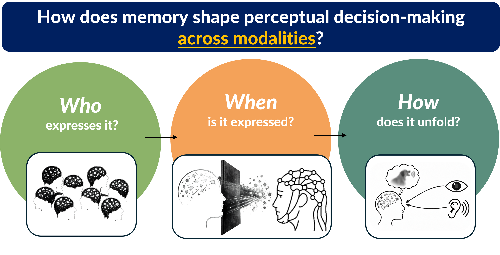

Research
Our senses rarely give us a complete picture of the world. A voice may be partly masked by background noise, a face may be briefly hidden from view, or different sources of information may conflict. Yet perception usually feels remarkably stable.
I study how learning and memory help the brain make sense of incomplete and uncertain sensory information.
My research is organized around three questions: WHO differs in how strongly prior experience shapes perception, WHEN does memory begin to shape perception, and HOW do memory and current sensory information interact?
The long-term goal of my research program is to 1) develop a supramodal account of how memory shapes perception and 2) use this framework to understand and support perception under everyday listening challenges and in the face of age-related sensory decline.
